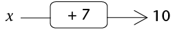
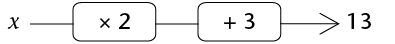
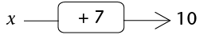

Vergelykings
In hierdie hoofstuk sal jy na getalle soek wat bewerings waar maak. Dit word die oplossing van vergelykings genoem. Jy sal vergelykings op twee verskillende maniere oplos, naamlik deur inspeksie en deur hulle âom te keer'.
Jy sal vind dat twee vergelykings dieselfde oplossing kan hê. Sulke vergelykings word ekwivalente vergelykings genoem. Jy sal ook ontdek dat nie alle bewerings algebraïese vergelykings is nie. Sommige bewerings is algebraïese identiteite en ander is in werklikheid algebraïese onmoontlikhede. Jy sal leer wat die verskil tussen hierdie drie tipes bewerings is.
Los vergelykings op deur inspeksie
-
Ses vergelykings is onder die tabel gegee. Gebruik die tabel om uit te vind vir watter van die gegewe waardes van x dit waar sal wees dat die linkerkant van die vergelyking gelyk is aan die regterkant.
Om die oplossing van 'n vergelyking te soek deur tabelle te gebruik, word oplossing deur inspeksie genoem.
\(x\)
-3
-2
-1
0
1
2
3
4
\(2x + 3\)
-3
-1
1
3
5
7
9
11
\(x + 4\)
1
2
3
4
5
6
7
8
\(9 - x\)
12
11
10
9
8
7
6
5
\(3x - 2\)
-11
-8
-5
-2
1
4
7
10
\(10x - 7\)
-37
-27
-17
-7
3
13
23
33
\(5x + 3\)
-12
-7
-2
3
8
13
18
23
\(10 - 3x\)
19
16
13
10
7
4
1
-2
-
\(2x + 3 = 5x + 3\)
-
\(5x + 3 = 9 - x\)
-
\(2x + 3 = x + 4\)
-
\(10x - 7 = 5 x + 3\)
-
\(3x - 2 = x + 4\)
-
\(9 - x = 2 x + 3\)
-
Twee vergelykings kan dieselfde oplossing hê. \(5x = 10\) en \(x + 2 = 4\) het byvoorbeeld dieselfde oplossing; \(x = 2\) is die oplossing vir albei vergelykings.
Twee vergelykings word ekwivalent genoem as hulle dieselfde oplossing het.
-
Watter van die vergelykings in vraag 1 het dieselfde oplossing? Verduidelik.
Los vergelykings op deur optellings- en vermenigvuldigingsinverses te gebruik
-
Bepaal die waarde van \(x\):
- 
- 
- 
-
Voltooi die vloeidiagramme. Jy moet al die ontbrekende getalle invul.
-

Om die tweede invoergetal te kry, kan jy vir jouself sê: "Nadat ek 7 bygetel het, het ek 12 gehad. Wat het ek gehad voordat ek 7 bygetel het?"
-

Om die invoergetal te kry wat met 13 ooreenstem, kan jy jouself afvra: "Wat het ek gehad voordat ek 3 bygetel het?" En dan: "Wat het ek gehad voordat ek met 2 vermenigvuldig het?"
-
-
Gebruik jou antwoorde vir vraag 2 om jou antwoorde vir vraag 1 te kontroleer.
-
Beskryf die instruksies in vloeidiagram 2(b) in woorde en ook met 'n uitdrukking in simbole.
-
Voltooi die vloeidiagram.
Hierdie vloeidiagram word die inverse van die vloeidiagram in vraag 2(b) genoem.

-
Vergelyk die invoergetalle en die uitvoergetalle van die vloeidiagramme in vraag 2(b) en vraag 5. Wat merk jy op?
-
Tel 5 by enige getal en trek dan 5 van jou antwoord af. Wat kry jy?
-
Vermenigvuldig enige getal met 10 en deel dan die antwoord deur 10. Wat kry jy?
As jy 'n getal bytel en dan dieselfde getal aftrek, is jy terug waar jy begin het. Dit is waarom optel en aftrek inverse bewerkings genoem word.
As jy met 'n getal vermenigvuldig en dan deur dieselfde getal deel, is jy terug waar jy begin het. Dit is waarom vermenigvuldiging en deling inverse bewerkings genoem word.
Die uitdrukking \(5x â 3\) sê "vermenigvuldig met 5 en trek dan 3 af ". Hierdie instruksie kan ook met 'n vloeidiagram gegee word:

Die vergelyking \(5x â 3 = 47\) kan ook as 'n vloeidiagram geskryf word:

-
-
Los die vergelykings hier onder op. Jy kan dit doen deur die inverse bewerkings te gebruik. Jy kan 'n vloeidiagram maak om jou te help om die bewerkings te sien.
-
\(2x + 5 = 23\)
-
\(3x - 5 = 16\)
-
\(5x - 60 = -5\)
-
\(\frac{1}{3}x + 11 = 19\)
-
10(\(x + 3) = 88\)
-
2(\(x - 13) = 14\)
-
Stel vergelykings op
Stel vergelykings op
Jy kan maklik 'n vergelyking opstel wat 5 as die oplossing het. Hier is 'n voorbeeld:
|
Begin deur die oplossing te skryf |
\(x = 5\) |
|
Tel 3 aan albei kante by |
\(x +3 = 8\) |
|
Vermenigvuldig albei kante met 5 |
\(5x + 15 = 40\) |
-
Wat is die oplossing van die vergelyking \(5x + 15 = 40\)?
-
Stel jou eie vergelyking op met die oplossing \(x = 3\).
-
Bongile het soos volg gewerk om die vergelyking \(2(x + 8) = 30\) te maak, maar hy het 'n deel van sy werk uitgevee.
Begin deur die oplossing te skryf
\(x = \) Tel 8 aan albei kante by
\( = 15\) Vermenigvuldig albei kante met 2
\(2(x + 8) = 30 \) Voltooi Bongile se skryfwerk om die vergelyking \(2(x + 8) = 30\) op te los.
-
Dit is hoe Bongile 'n moeiliker vergelyking gemaak het:
Begin deur die oplossing te skryf
\(x = \) Vermenigvuldig met 3 aan albei kante
\(3x = \) Trek 9 aan albei kante af
\(3x â 9 = 6\) Tel 2x aan albei kante by
\(5x â 9 = 2x + 6\) -
Wat was aan die regterkant voor Bongile 9 afgetrek het?
-
Wat is die oplossing van \(5x - 9 = 2x + 6\)?
-
-
Bongile het met 'n oplossing begin en met 'n vergelyking geëindig. Vul die stappe in wat Bongile gevolg het om die vergelyking op te stel en die vergelyking op te los:
\[\begin{align} x &= \\ 8x &= \\ 8x + 3 &= \\ 3x + 3 &= 2x + 6 \end{align} \]
Los vergelykings op
|
Om 'n vergelyking op te stel, kan jy dieselfde bewerking aan albei kante toepas. |
Om 'n vergelyking op te los, kan jy die inverse bewerking aan albei kante toepas. |
|||
|
|
\[x = 4\] |
|
||
|
Vermenigvuldig met 8 |
\[8x = 32\] |
Deel deur 8 |
||
|
Tel 3 by |
\[8x + 3 = 35\] |
Trek 3 af |
||
|
Trek \(5x\) af |
\[3x + 3 = 35-5x\] |
Tel \(5x\) by |

Gebruik enige toepaslike metode om die vergelykings hier onder op te los.
-
\(5x + 3 = 24 â 2x \)
\(2x + 4 = -9\)
-
\(3 - x = x - 3\)
-
\(6(2x + 1) = 0\)
-
-
-
\(4(1 - 2x) = 12 - 7x)\)
-
\(8(1 - 3x) = 5(4x + 6)\)
-
\(7x - 10 = 3x + 7\)
-
\(1,6x + 7 = 3,5x + 3,2\)
-
Getalpatrone en vergelykings
-
-
Watter van die volgende reëls sal die getalpatroon oplewer wat in die tweede ry van die tabel hier onder gegee word?
A. Termwaarde \(= 8n\) waar \(n\) die termnommer is
B. Termwaarde \(= 6n â1\) waar \(n\) die termnommer is
C. Termwaarde \(= 6n + 2\) waar \(n\) die termnommer is
D. Termwaarde \(= 10n â 2\) waar \(n\) die termnommer is
E. Termwaarde \(= 5n + 3\) waar \(n\) die termnommer is
Termnommer
1
2
3
4
5
6
7
8
9
Termwaarde
8
13
18
23
28
33
38
43
48
-
Die sesde term van die ry het die waarde 33. Watter term sal die waarde 143 hê? Jy kan 'n vergelyking opstel en oplos om uit te vind.
-
Pas reël E op jou antwoord toe om te kontroleer of jou antwoord korrek is.
-
-
-
Skryf die reël neer wat die getalpatroon in die tweede ry van hierdie tabel sal oplewer. Jy sal dalk 'n bietjie moet eksperimenteer om uit te vind wat die reël is.
Termnommer
1
2
3
4
5
6
7
8
9
Termwaarde
5
8
11
14
17
20
23
26
29
-
atter term sal die waarde 221 hê?
-
-
Die reël vir getalpatroon A is \(4n + 11\) en die reël vir patroon B is \(7n â 34\).
-
Voltooi die tabel vir die twee patrone.
Termnommer
1
2
3
4
5
6
7
8
9
Patroon A
Patroon B
-
Vir watter waarde van n is die terme van die twee patrone gelyk?
-
Vergelykings en situasies
- Beskou hierdie situasie.
Om 'n kamer in 'n sekere gebou te huur, moet jy 'n deposito van R400 betaal en dan R80 per dag.
Hoeveel geld het jy nodig om die kamer vir 10 dae te huur?
Hoeveel geld het jy nodig om die kamer vir 15 dae te huur?
Watter van die volgende beskryf die metode wat jy gebruik het om vraag 1(a) en (b) te beantwoord die beste? Onderstreep dit.
A. Totale koste = \(\text{R }400 + \text{R }80\)
B. Totale koste = \(400\text{(getal dae} + 80)\)
C. Totale koste = \(80 \times \text{ getal dae } + 400\)
D. Totale koste = \((80 + 400) \times \text{ getal dae}\)
Vir hoeveel dae kan jy die kamer wat in vraag 1 beskryf is huur, as jy R2 800 het?
As jy wil weet vir hoeveel dae jy die kamer kan huur as jy R720 het, kan jy 'n vergelyking opstel en dit oplos:
Jy weet die totale koste is R720 en jy weet dat jy die totale koste soos volg kan uitwerk:
\(\text{Totale koste }= 80x + 400\), waar x die getal dae is. Dus \(80x + 400 = 720\) en \(x = 4\) dae.
Bepaal in elkeen van die volgende gevalle die onbekende getal deur 'n vergelyking op te stel en dit op te los.
Om 'n sekere kamer te huur, moet jy 'n deposito van R300 betaal en dan R120 per dag.
Vir hoeveel dae kan jy die kamer huur as jy 'n totaal van R1 740 kan betaal? (As jy sukkel om die vergelyking op te stel, mag dit jou help om eers te besluit hoe jy sal uitwerk wat dit sal kos om die kamer vir 6 dae te huur.)
Wat sal dit kos om die kamer vir 10 dae, vir 11 dae en vir 12 dae te huur?
Vir hoeveel dae kan jy die kamer huur as jy R3 300 beskikbaar het?
Vir hoeveel dae kan jy die kamer huur as jy R3 000 beskikbaar het?
Ben en Thabo besluit om 'n paar berekeninge met 'n bepaalde getal te doen. Ben vermenigvuldig die getal met 5 en tel 12 by. Thabo kry dieselfde antwoord as Ben wanneer hy die getal met 9 vermenigvuldig en 16 aftrek. Wat is die getal waarmee hulle gewerk het?
Die koste om 'n bepaalde motor vir 'n tydperk van x dae te huur, kan met die volgende formule bereken word: Huurkoste in rand \(= 260x + 310\)
Watter inligting oor die huur van die motor sal jy kry as jy die volgende vergelyking oplos? \(260x + 310 = 2 910\)
Sarah het 'n deposito van R320 vir 'n stalletjie by 'n mark betaal en sy betaal ook R70 per dag huur vir die stalletjie. Sy verkoop vrugte en groente by die stalletjie en stel vas dat sy elke dag ongeveer R150 wins kan maak. Na hoeveel dae sal sy soveel verdien het as wat sy in totaal vir die stalletjie betaal het?
Los vergelykings op deur die eienskappe van eksponente te gebruik
Jy moet dalk terugblaai na Hoofstuk 5 om jou geheue oor die eienskappe van eksponente te verfris.
Een tipe eksponensiële vergelyking waarmee jy in Graad 9 te doen het, het een of meer terme met 'n grondtal wat verhef word tot 'n mag wat 'n veranderlike bevat.
Voorbeeld: \(2^{x} = 16\)
Wanneer ons die onbekende waarde moet bepaal, vra ons die vraag: "Tot watter mag moet die grondtal verhef word sodat die bewering waar is?"
Voorbeeld: \(2^{x} = 16\) Maak seker dat die terme met \(x\) op hul eie aan een kant is.
\(2^{x} = 2^{4}\) Skryf die bekende term met dieselfde grondtal as die term met die eksponent.
\(x = 4\) Stel die eksponente gelyk.
In die voorbeeld hier bo kan ons die eksponente gelykstel omdat die twee getalle gelyk is slegs wanneer hulle tot dieselfde mag verhef word.
-
Los op vir \(x\):
-
\(5^{x-1} = 125\)
-
\(2^{x+3} = 8\)
-
\(10^{x} = 10 000\)
-
\(4^{x+2} = 64\)
-
\(7^{x+1} = 1\)
-
\(x^{0} = 1\)
Voorbeeld: Los op vir \(x\): \(3^{x} = \frac{1}{27}\)
\(3^{x}\) = \(3^{-3}\) (Herskryf \(\frac{1}{27}\) as 'n getal met grondtal 3)
\(x = -3\) (Stel die eksponente gelyk.)
-
-
Los op vir \(x\).
-
\(7^{x} = \frac{1}{49}\)
-
\(10^{x} = 0,001\)
-
\(6^{x} = \frac{1}{216}\)
-
\(10^{x-1} = 0,001\)
-
\(4^{-x} = \frac{1}{16}\)
-
\(7^{x} =7^{-3}\)
-
In 'n ander tipe vergelyking wat eksponente behels, is die veranderlike deel van die grondtal.
Voorbeeld: \(x^5 = 32\)
Wanneer ons die onbekende waarde moet bepaal, vra ons die vraag: "Watter getal moet tot die gegewe mag verhef word sodat die bewering waar is?"
Vir hierdie vergelykings moet jy onthou wat jy oor die magte van getalle soos 2, 3, 4, 5 en 10 weet.
Los vergelykings op met ân veranderlike in die grondtal
-
Voltooi die tabel en beantwoord die vrae wat volg:
\(x\)
2
3
4
5
(a)
\(x^{3}\)
\(2^{3} = 8\)
(b)
\(x^{5}\)
\(2^{5} = 32\)
(c)
\(x^{4}\)
\(2^{4} = 16\)
Vir watter waarde van \(x\) is die volgende vergelykings waar?
-
\(x^{3} = 64\)
-
\(x^{5} = 32\)
-
\(x^{4} = 256\)
-
\(x^{3} = 8\)
-
\(x^{4} = 16\)
-
\(x^{5} = 3 125\)
-
-
Los op vir \(x\) en gee 'n rede:
-
\(x^{3} = 216\)
-
\(x^{2} = 324\)
-
\(x^{4}= 10 000\)
-
\(8^{x} = 512\)
-
\(18^{x} = 324\)
-
\(6^{x} = 216\)
-
-
Ahmed het 'n getal met 5 vermenigvuldig, 3 by die antwoord getel en toe die getal waarmee hy begin het afgetrek. Die antwoord was 11. Met watter getal het hy begin?
-
Gebruik enige gepaste metode om die vergelykings op te los.
\(3(x - 2) = 4(x + 1)\)
\(5(x + 2) = -3(2 - x)\)
\(1,5x = 0,7x - 24\)
\(5(x + 3) = 5x + 12\)
\( 2,5x = 0,5(x + 10)\)
\((x â 2) = 7(2 â x)\)
\(\frac{1}{2}(2x - 3) = 5\)
\(2x - 3(3 + x) = 5x + 9\)